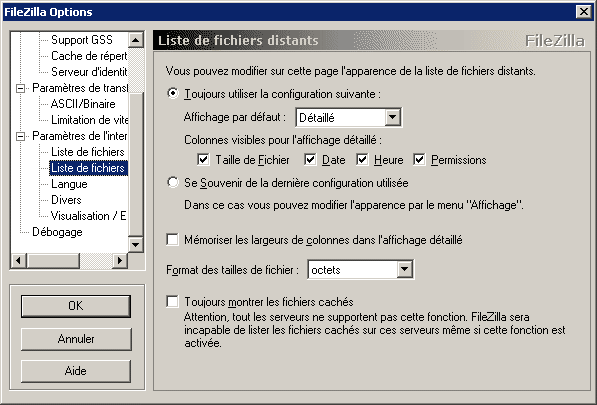

Liste des Fichiers Distants
Vue d'ensemble:
Cette section configure l'apparence de la liste des fichiers distants.

Toujours utiliser la configuration suivante
Quand cette option est sélectionnée, les éléments choisis pour l'affichage de la liste des fichiers distants seront utilisés.
Affichage par défaut
Choisir l'un des types d'affichage de la liste des fichiers distant dans le menu déroulant:
Détails - Liste des fichiers présentant tous les détails: c'est le style par défaut Liste - Liste des noms de fichiers et de leurs icônes seulement. Cette liste peut être étendue horizontalement si elle est trop importante pour la taille de la fenêtre Grandes icônes - Liste sous forme d'icônes avec le nom de fichier dessous. Petites icônes - Liste des noms de fichiers et de leurs icônes seulement. Cette liste peut être étendue verticalement si elle est trop importante pour la taille de la fenêtre Colonnes visibles pour l'affichage détaillé
Spécifie quelles colonnes seront visibles avec le style 'Détaillé'. Utile si vous ne souhaitez pas afficher tous les détails.
Se souvenir de la dernière configuration utilisée
Si cette option est sélectionnée, FileZilla mémorisera l'agencement de la liste des fichiers distants à la fermeture et le restituera à la prochaine session.
Mémoriser la largeur des colonnes dans l'affichage détaillé
Si cette option est activée, FileZilla mémorisera la largeur des colonnes pour l'affichage de la liste des fichiers distants pour le style 'Détaillé'.
Format de la taille des fichiers dans le style 'Détaillé'
Spécifie sous quel format la taille de fichiers sera affichée. La taille peut aussi bien être affichée en bytes, KB et MB. Avec le mode Auto, FileZilla tient compte de la taille de fichier pour s'adapter au plus petit affichage: un gros fichier pouvant entraîner une grande chaîne à afficher, FileZilla utilisera les KB ou MB dans ce cas.
Toujours montrer les fichiers cachés
Par défaut, certains serveurs n'affichent pas les fichiers cachés comme les fichiers dot (noms de fichiers commençant par un point). Activez Toujours montrer les fichiers cachés si vous voulez voir ces fichiers. Cependant, tous les serveurs ne supportent pas cette fonction, et peuvent retourner une erreur ou des listes de dossiers distants rompus ou incomplets. Soyez donc prudent en activant cette fonction.